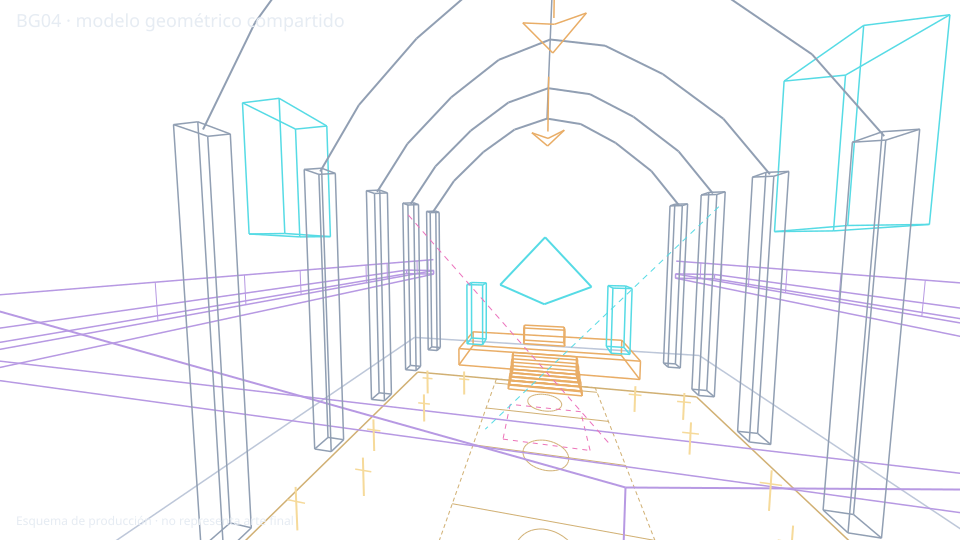
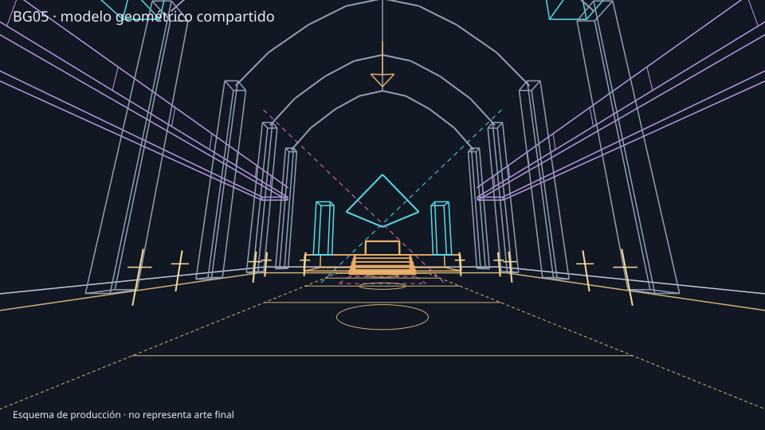
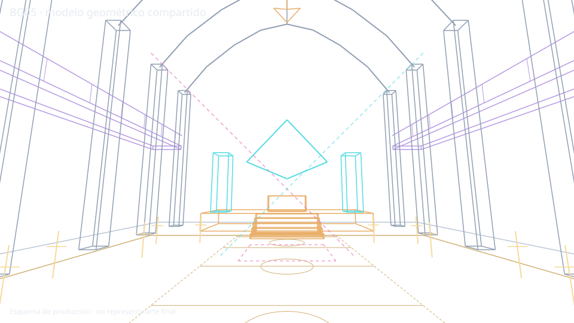
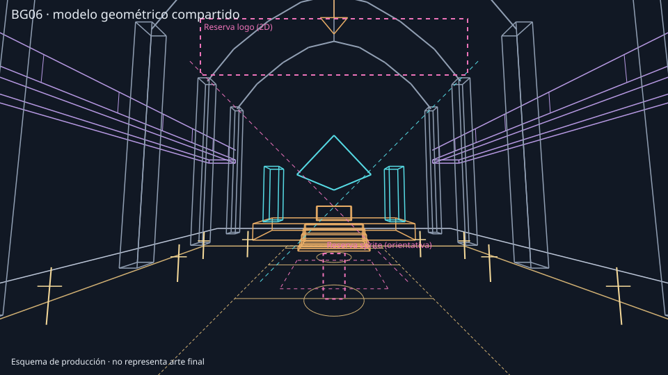
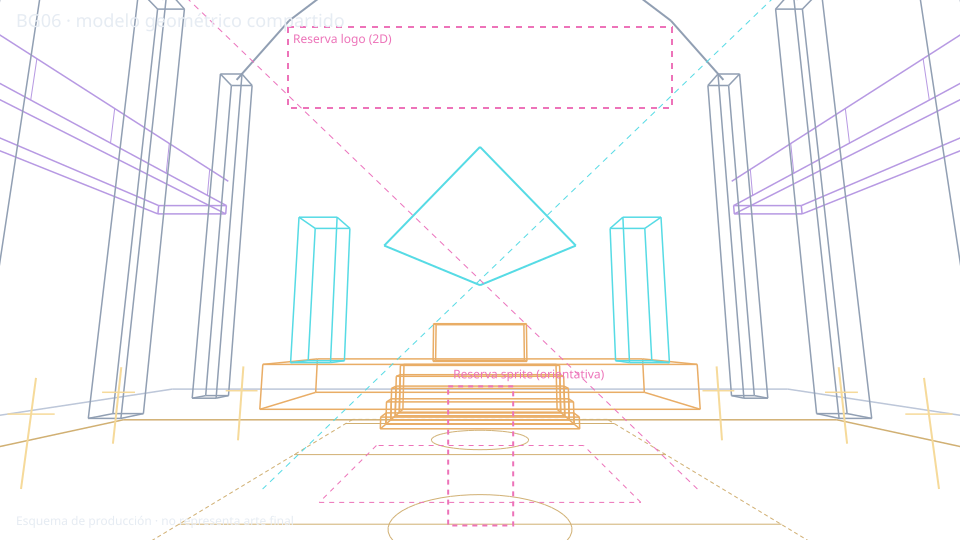

BG04


Overlay de comparación
Solo visualización: imágenes enteras sin recorte ni deformación, ajustadas proporcionalmente a una misma caja. Sus relaciones de aspecto difieren ligeramente; no son capas de producción ni registro exacto.

BLOQUEADA POR CONTINUIDAD VISUAL. Un modelo común y una cámara ajustada no validan la identidad de las imágenes. BG04 es la referencia; BG05 y BG06 son propuestas 08C.1.
Informe y decisión · Galería anterior intacta · Modelo vigente · Cámaras experimentales · Marcas subjetivas
Confirmado: se usan las tres cámaras con la misma geometría técnica; no se confirma identidad espacial artística. Estimado: medidas, correspondencias y cámaras. Pendiente: revisión artística, información de planta y resolución de contradicciones.
Solo visualización: imágenes enteras sin recorte ni deformación, ajustadas proporcionalmente a una misma caja. Sus relaciones de aspecto difieren ligeramente; no son capas de producción ni registro exacto.




Solo visualización: imágenes enteras sin recorte ni deformación, ajustadas proporcionalmente a una misma caja. Sus relaciones de aspecto difieren ligeramente; no son capas de producción ni registro exacto.




Solo visualización: imágenes enteras sin recorte ni deformación, ajustadas proporcionalmente a una misma caja. Sus relaciones de aspecto difieren ligeramente; no son capas de producción ni registro exacto.



Visibilidad negativa no equivale a ausencia física. Estados y confianza son juicio visual, no mediciones.
| Elemento | BG04 | BG05 | BG06 | Identificación en tres | Estado | Confianza | Información faltante |
|---|---|---|---|---|---|---|---|
| Suelo y pista | Parcial: banda longitudinal bajo público y barandilla, centro inferior. | Visible: gran círculo concéntrico ocupa primer plano central. | Visible: círculo concéntrico en primer plano central. | sí, con oclusión en BG04 | CONTRADICE | media | Vista de BG04 sin oclusión y diseño común; la banda visible no demuestra que nunca haya círculo oculto, pero la zona visible no coincide con el círculo extenso. |
| Escenario | Visible: tarima al fondo, a la derecha del centro. | Visible: tarima central con cabina iluminada. | Visible: tarima central con frente más bajo y muro detrás. | sí | DUDOSA | media-baja | Planta, posición y proporciones compartidas; vértices y paneles no coinciden. |
| Escalera | Visible: centrada en la tarima distante. | Visible: centrada detrás de pista circular. | Visible: centrada, más ancha y aparentemente más larga. | sí | DUDOSA | media-baja | Ancho, número de peldaños y distancias; no asumir que un cambio aparente sea solo perspectiva. |
| Cabina DJ | No identificable con certeza: zona central iluminada. | Visible en centro del escenario, figura detrás. | Parcial/dudosa: rectángulo bajo al fondo, sin figura claramente visible. | no, identificable solo en BG05 | DUDOSA | baja | Identidad, cabina y posición en BG04 y BG06; no atribuir la figura de BG05 sin evidencia. |
| Altavoces | Visibles: torres junto a escenario y varios arreglos suspendidos laterales. | Visibles: stacks laterales y de escenario, al menos dos arreglos altos. | Visibles: torres de primer plano y junto a escenario; suspendidos no identificados. | parcial | DUDOSA | media-baja | Mapa de torres, altura, módulos y posición real; fuera de vista/oclusión no significa ausencia. |
| Columnas | Visibles a ambos lados, repetidas hacia el fondo. | Visibles a ambos lados, grandes columnas frontales. | Visibles a ambos lados y como marco. | sí | PROBABLE | media-baja | Correspondencia de cada crujía y su separación, no solo estilo. |
| Balcones laterales | Visibles con barandillas laterales y cambios de profundidad. | Visibles en laterales superiores con siluetas. | Visibles en laterales superiores, con siluetas lejanas. | sí | PROBABLE | media-baja | Altura y continuidad de cada tramo; puntos de entrada. |
| Galería posterior | Parcial: barandilla prominente inferior, esquina cerca del centro-derecha. | No visible: cámara a nivel de pista orientada al escenario. | No visible: posible fuera de cuadro detrás de cámara. | no; fuera de cuadro no implica ausencia | DUDOSA | baja | Planta y conexión de esa barandilla, además de su ubicación detrás de BG05/06. |
| Público | Visible en pista central, siluetas pequeñas. | Visible a ambos lados y filas en plano medio; DJ. | Parcial: siluetas en balcones; pista vacía, sin figura clara en cabina. | parcial | DUDOSA | baja | Tiempo entre planos, trayectorias, oclusiones y continuidad del DJ; no asumir simultaneidad. |
| Bóvedas y techo | Visibles: nervios, crujías y lámparas sobre nave. | Visibles: bóveda frontal y lámpara central. | Visibles: bóveda frontal; gran lámpara de BG05 no se identifica. | parcial | PROBABLE | media-baja | Identidad de crujías y posición de luminarias; elemento fuera de cuadro o apagado no implica ausencia. |
| Iluminación | Visible: haces cruzados cian/magenta, lámparas cálidas. | Visible: haces magenta y cian sobre escenario, lámpara cálida. | Visible: luces cian/violeta laterales, fondo cian; haces y lámpara central no identificados. | parcial | DUDOSA | baja | Estado temporal/programación de luces, fuentes y oclusiones; una escena iluminada distinta no prueba otra sala. |